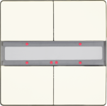
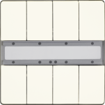
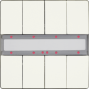
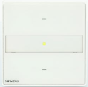

DELTA款式产品说明
DELTA 风格墙壁开关具有以下特点：
- Vertically arranged button pairs.
- Labeling field between the buttons.
- Mounted together with the design frame “DELTA style” onto a bus coupling unit (BTM).
- The electrical connection between the wall switch and the bus coupling unit (BTM) is established via the Bus Transceiver Interface (BTI).
- Vertically aligned buttons may be used as a pair of buttons, or as single buttons. Single buttons can be used for sending values, single-button switching/dimming or single-button control of blinds.
Note:
如果您所在的国家/地区有售，GAMMA arina 触摸传感器的分类与 DELTA 类型的分类相同。工程程序和安装与DELTA样式相同。
| UP 285/2, DELTA 风格墙壁开关，单
订单号：5WG1 285-2DB_2 下载数据表：5WG12852DB_2 |

| UP 285/3, DELTA 风格墙壁开关，单个，状态为 LED
订单号：5WG1 285-2DB_3 下载数据表：5WG12852DB_3 |

| UP 286/2, DELTA 风格墙壁开关，双
订单号：5WG1 286-2DB_2 下载数据表：5WG12862DB_2 |

 | UP 286/3, DELTA 风格墙壁开关，双状态，状态 LED
订单号：5WG1 286-2DB_3 下载数据表：5WG12862DB_3 |
 | UP 287/2, DELTA 风格墙壁开关，四位
订单号：5WG1 287-2DB_2 下载数据表：5WG12872DB_2 |
 | UP 287/3, DELTA style wall switch, quadruple with status LED
订单号：5WG1 287-2DB_3 下载数据表：5WG12872DB_3 |
| UP 287/5, DELTA 风格墙壁开关，四重状态 LED / IR 接收器解码器
订单号：5WG1 287-2DB_5 下载数据表：5WG12872DB_5 |

 | UP 201/2, GAMMA arina 触摸传感器，单个
订单号：5WG1 201-2DB_2 下载数据表：5WG12012DB_2 |
| UP 201/3, GAMMA arina 触摸传感器，单个，状态为 LED
订单号：5WG1 201-2DB_3 下载数据表：5WG12012DB_3 |

| UP 202/2, GAMMA arina 触摸传感器，双
订单号：5WG1 202-2DB_2 下载数据表：5WG12022DB_2 |

| UP 202/3, GAMMA arina 触摸传感器，双状态 LED
订单号：5WG1 202-2DB_3 下载数据表：5WG12022DB_3 |

| UP 203/2, GAMMA arina 触摸传感器，四重
订单号：5WG1 203-2DB_2 下载数据表：5WG12032DB_2 |

| UP 203/3, GAMMA arina 触摸传感器，四重状态 LED
订单号：5WG1 203-2DB_3 下载数据表：5WG12032DB_3 |

| UP 203/5, GAMMA arina 触摸传感器，四重状态 LED / IR 接收器解码器
订单号：5WG1 203-2DB_5 下载数据表：5WG12032DB_5 |